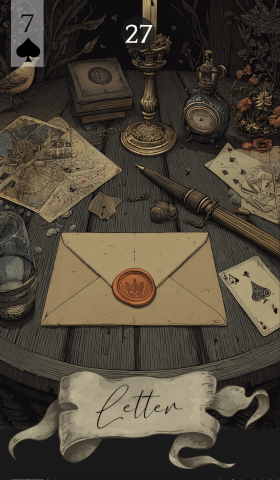

第 27 张 · 黑桃 7
信
书面沟通
文件
讯息
手续
信息
信打开的是书面沟通与文件的世界。它在场时，消息会以看得见摸得着的方式抵达——一封信、一封邮件，或任何承载着分量与消息的书面材料。
免费抽牌 →
信打开的是书面沟通与文件的世界。它在场时，消息会以看得见摸得着的方式抵达——一封信、一封邮件，或任何承载着分量与消息的书面材料。
免费抽牌 →信代表以书面形式传来的消息或信息。它可以是一份重要文件、一纸合约、一封邮件，也可以是一张便条或一封私人书信。这张牌关乎清晰，关乎那种实实在在落到你手里的沟通，往往带着分量与后果。当你在等结果、想把某件事弄清楚，或者要靠正式沟通完成某个转变时，留意它。
信的气质是踏实的，它想把事情落定、公开。它讲究细节，虽然不像一通电话或一次面谈那样即时，却常常带来可靠与确定。无论是一份正式文件还是一张写满心意的便条，信的分量既在于内容，也在于沟通这件事本身的过程。
在关系里，信指的是通过短信、邮件甚至手写便条交换的话语。它可能意味着一次把感觉说清楚的交流，一次表明心意的表态，或者一场化解误会的沟通。不管是一张甜蜜的便条还是一封不得不写的信，是文字成了两颗心之间的桥。
在工作与生意上，信担的是正式沟通的角色：合约、报告、邮件或录用通知。它提示有些手续需要你处理，或有消息将通过正式渠道到来。可以预期确认函、提案，或任何能把计划敲定、把方向改掉的书面往来。
对写下来的讯息保持开放。查收件箱，拆开信件，并且读出字面之外的意思。信建议你在自己的表达上做到周密准确，不留含混之处，同时也留心别人写下的东西。
信的含义会随身旁的牌变化，邻牌会为它带来的讯息补上语境。以下是信与雷诺曼牌组中其余各牌的搭配：
传统上，这张牌画成一个信封或一封信，象征沟通看得见的那一面。信出现在解读里，强调的是文字的可靠：它把想法与意图保存下来，让讯息带上其他形式常常没有的分量。